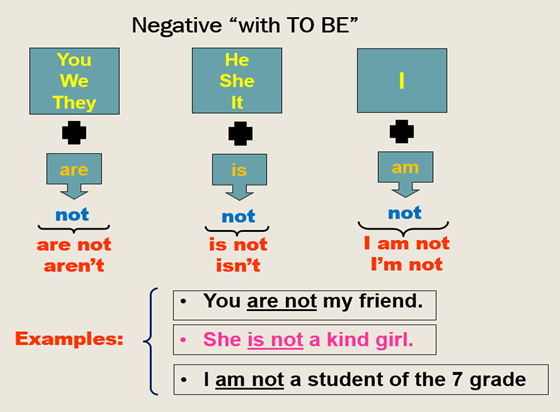

NEGATIVE SENTENCES
THE VERB TO BE “NEGATIVE FORM”
OBJETIVO: Afianzar la comprensión del verbo to Be en forma negativa.
Para hacer las oraciones negativas se le agrega la partícula o adverbio NOT después del verbo to be (is, are, am)
Su estructura es:
Sujeto + verbo to be (am, is, are) + not + complemento
Revisemos la siguiente imagen:

Examples:
You are not my friend = No eres mi amigo
She is not a kind girl = ella no es una chica agrada
I am not a student of the 7 grade = yo no soy un estudiante del grado 7
Continuemos aprendiendo y divirtiéndonos con estos agradables videos.
Mira cuidadosamente estos videos donde podrás observar las reglas gramaticales básicas para formar oraciones en forma negativa.
Desarrolla los ejercicios de práctica que te proponen para que mejores tu conocimiento del idioma inglés.
Actividad: Revisión y repaso del tiempo gramatical verbo to be
Desarrolle la guía propuesta teniendo en cuenta la información previa de los videos anteriores.
A. Complete las oraciones con am, is, o are.
B. Escriba las oraciones en forma negativa
C. Responda las preguntas teniendo en cuenta la información de las imágenes.
Después de desarrollar la guía envíe la información al correo nicmar2329@gmail.com para que pueda ser revisada.
https://www.liveworksheets.com/w/en/english-second-language-esl/44598?authuser=0